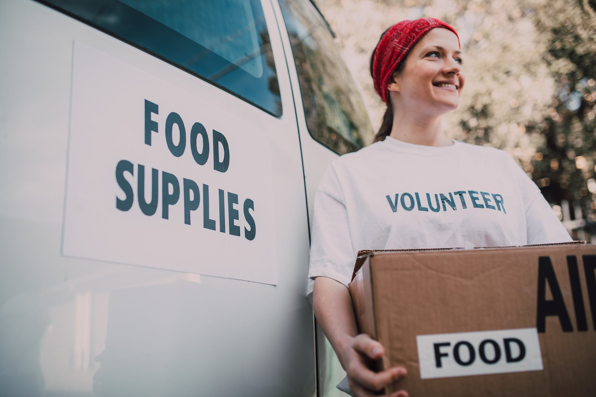

In the world of charitable giving, it's easy to underestimate the power of small acts. At Chari, we believe that every donation, no matter the size, has the potential to create a macro impact — a ripple effect of positive change that transcends individual contributions. Let's explore the transformative influence of micro-donations and how they play a pivotal role in shaping the future through Chari's mission.

Every micro-donation with Chari is a vote for hope, a commitment to change, and a belief in the transformative potential of collective generosity. Join us in turning small acts into monumental impacts, and together, let's make the world a better place, one micro-donation at a time.
Micro-donations, often modest in size, possess an extraordinary collective strength. At Chari, we've witnessed the magic that unfolds when individuals come together with a shared purpose. These small acts of generosity, whether a few dollars or spare change.
Micro-donations play a crucial role in Chari's commitment to education.
Micro-donations play a crucial role in Chari's commitment to education. By contributing what might seem like a small amount individually, donors collectively fuel scholarship programs, provide essential learning resources, and support schools in underserved communities. The impact extends beyond financial assistance; it opens doors to education for those who might not have had the opportunity otherwise.
In the pursuit of environmental sustainability, micro-donations contribute drop by drop to Chari's conservation initiatives. From tree planting campaigns to waste management projects, these seemingly modest contributions collectively nurture a sustainable environment, safeguarding our planet for future generations.
At Chari, we celebrate the collective power of micro-donations. Your seemingly small contribution becomes a vital part of a larger narrative — a story of positive change, resilience, and empowerment. It's a testament to the belief that, together, we can create a macro impact that shapes a better, more compassionate world.